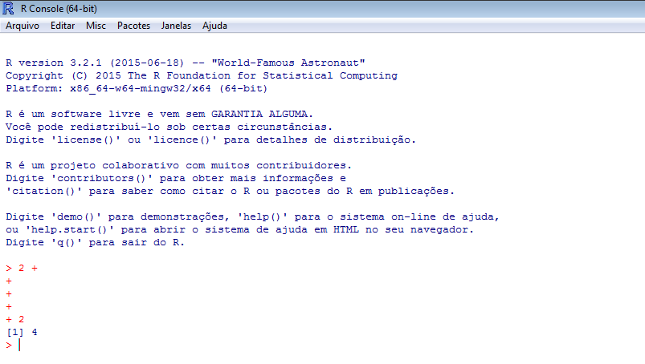

Rodrigo Sant'Ana Fernando Mayer
UNIVALI/CTTMar/GEP UFPR/DEST/LEG
rsantana@univali.br fernandomayer@gmail.com
Um breve histórico sobre o software R
Linguagem S: desenvolvida por R. Becker, J. Chambers e A. Wilks (AT&T Bell Laboratories);
Versão comercial: S-Plus (Insightful Corporation);
Versão livre: R desenvolvido por R. Ihaka e R. Gentleman (Universidade de Auckland);
R Development Core Team;
"Tudo no R é um objeto..."
Passo a passo para iniciar um trabalho com R:
Crie um diretório de trabalho onde serão armazenados os dados, códigos R e saídas das análises que serão realizadas nesta pesquisa;
Utilizando o menu do RStudio, direcione o software para a pasta recentemente criada. Para isto, clique em
Session >> Set Working Directory >> Choose Directory
e direcione sua escolha para pasta criada anteriormente.
getwd()[1] "/media/Backup/Dropbox/Cursos/Ministrados/Curso_R_Intro_UNIVALI_2015"
O símbolo ">" indica que o R está pronto para receber um novo comando. Ready to work!!
O símbolo no prompt de comando (ou console) do R muda de ">" para "+" para indicar ao usuário que o comando enviado está incompleto.

Teste em seu computador os seguintes comandos abaixo:
## Somando escalares...
2 + 2[1] 4
## Múltiplicando escalares...
2 *
2[1] 4
## Dividindo escalares...
2 / 2[1] 1
Notem que os espaços entre os números não fazem diferença para o R.
Arquivo >> Novo script.
nomeie conforme desejado e salve o script com a extensão .R;
Para envio rápido dos comandos digitados no "Editor de script" do RStudio diretamente para o "Console" do R é possível utilizar o atalho Ctrl + R;
Para adicionar comentários/anotações ao script que não fazem parte dos comandos utilizados nas análises, utiliza-se o símbolo "#" antes do texto desejado. O que estiver depois do símbolo não será interpretado pelo R. Portanto:
2 + 2 ### Esta linha será executada, porém o comentário não.[1] 4
## 2 + 2 Esta linha será totalmente ignorada pelo R.Memorizar todos os comandos do R é praticamente impossível. Para auxiliar nesta tarefa, o R possui uma estrutura completa de pesquisa sobre temas correlatos às funções existentes em seus pacotes.
A função "help.search()" ajuda o usuário na busca por um determinado tema de interesse dentro da base do R ou em um pacote adicional específico. Trata-se de uma pesquisa às bases de documentos do R através de uma pesquisa por palavra-chave (em inglês).
### Pesquisa utilizando a função completa
help.search("linear models")
### Pesquisa utilizando a função resumida
??"linear models"Ou ainda, podemos pesquisar sobre uma função ou comando de nome conhecido, através da função "help()" presente no software R.
### Pesquisa utilizando a função completa
help(mean)
### Pesquisa utilizando a função resumida
?meanOutras formas de pesquisa no R, que podem auxiliar bastante no dia-a-dia são:
help.start()RSiteSearch("linear models")O que é um objeto no R?
Por quê objetos?
Estrutura de programação no R:
"Tudo no R é um objeto."
"Todo objeto no R tem uma classe"
Classe é a definição de um objeto. Descreve a forma do objeto e como ele será manipulado pelas diferentes funções do R.
Método são funções genéricas que executam suas tarefas de acordo com a classe de cada objeto.
### Atribuindo um valor ao objeto "x". x recebe o valor 2.
x <- 2
### Realizando uma operação de adição entre o objeto x e o escalar 2.
x + 2[1] 4
### Qual o valor de x?
x[1] 2
Dicas e considerações importantes para nomenclatura de objetos no R:
Prática com R
Importante:
| Operador | Significado |
|---|---|
| + | adição |
| - | subtração |
| * | multiplicação |
| / | divisão |
| ^ | potência |
| exp() | exponencial |
| sqrt() | raíz quadrada |
| factorial() | fatorial |
| log() | logaritmo |